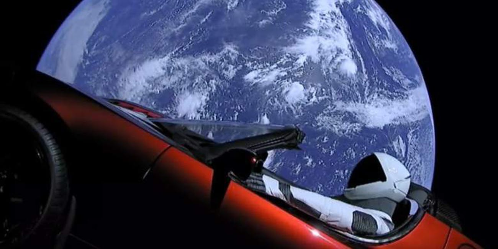

The cost of space missions
Space missions are associated with high costs. It currently costs approximately $2000 to send a lemon to the International Space Station. Payload weight is an important metric in determining the cost of space missions and launch providers often compete to lower the launch price per pound.
Currently most government agencies divert funding and grants to projects and launches that support the ISS and its crew. Even Russia halted orbital space tourism in 2010 due to the increase in the International Space Station crew size, using the seats for expedition crews that would previously have been sold to paying spaceflight participants.
What factors or materials add up in the costs?
The Rocket launch always makes up the most significant cost of a space mission. It costs a lot to build a rocket. The NASA SLS system cost around $500 million to launch each time but now, rockets are now getting cheaper due to the private sector. An average space rocket from SpaceX only costs around $60 million, a significant decrease, and there are plans to bring that number to $10 million by reusing the various stages of the rocket.
- Rocket
- Rocket Fuel
- Transportation costs
- Material cost (Steel)
- Testing and Quality Assurance
- Salaries
- Training (Optional)
Navigate here to watch the video describing the costs of a space mission in one of its sections and navigate here to see the costs for space tourism missions and activities charged by various agencies.
